1. fejezet · diák: 1–35
Fejlődés, növekedés és a nyugati recept
„Az éktől a számítógépig” – a kurzus azt járja körül, hogyan jutott el az emberiség az egyszerű eszközöktől a mai gazdagságig, és miért jutottak el ide egyes társadalmak sokkal hamarabb, mint mások.
1770 körül egy újszülött átlagosan 34 évre számíthatott. Ez a szám száz év múlva, 1870-ben is alig volt nagyobb. Aztán valami megváltozott: 1950-re 62, 2019-re 79 év lett. Az emberiség története nagy részében alig mozdult az életszínvonal, az utolsó két évszázadban viszont többet javult, mint előtte évezredeken át.
A fejezet kérdése: mi teszi lehetővé, hogy egy társadalom tartósan gazdagabb legyen, és jobban éljenek benne az emberek? Létezik-e erre recept, és le lehet-e másolni?
Útiterv
Először tisztázzuk, mit jelent a fejlődés, és miért érdemes hozzá a múltba nézni. Utána megnézzük, egy út vezet-e a fejlettséghez vagy több, és hogy egyáltalán cél-e a növekedés, ha a környezet megfizeti az árát. Végül eljutunk a „nyugati recepthez”: az ipari forradalmakhoz és ahhoz, hogy a hatékonyság miért fontosabb az erőforrások bőségénél.
Bevezetés: jólétünket érintő döntések 1–6. dia
- A fejezetek egy esettel indulnak: ez segít megérteni és megjegyezni a témát.
- A statisztikák, térképek és példák illusztrálnak és érvelnek. A pontos számokat nem kell megtanulni.
- A vizsgán a kulcsfogalmak, az ok-okozati mechanizmusok és a példák közötti összefüggések számítanak. Ezeket a diasor jelölései emelik ki, itt színes dobozok: [D] definíció, [M] mechanizmus, [E] eset, [V] vitatott állítás.
- A fejlődés gazdaságtörténetének sok kérdése vitatott: kevés a megdönthetetlen bizonyíték, és sok állításnak van ellenmagyarázata. Ezért a [V] dobozokban mindig az ellenérvet is megnézzük.
- A kurzushoz magyarázó videók is tartoznak. Ezek 2020 óta változatlanok, a diasor viszont évente frissül, így apró eltérések lehetnek, de a videók továbbra is jók a felkészüléshez.
Egyénként és közösségként is folyamatosan döntünk a jólétünkről: mit tanuljunk, mibe fektessünk, milyen szabályokat hozzunk. Mindig jobb helyzetbe szeretnénk kerülni, vagy legalább elkerülni, hogy rosszabb helyzetbe jussunk. De honnan tudjuk, hogy egy döntés jó vagy rossz? Háromféleképpen dönthetünk:
- ösztönösen, megfontolás nélkül;
- öntudatlanul felszedett mintákat követve – úgy, „ahogy szokás”;
- tudatosan megtanult tudás alapján: elméletekre és múltbeli példákra támaszkodva.
A gazdaságtörténet a harmadik utat erősíti: megmutatja, mely döntések váltak be a múltban, és melyek nem.
A nyitó eset számai jól mutatják, mekkora változásról van szó. A születéskor várható élettartam másfél évszázadon át alig mozdult, aztán a 19. század végétől folyamatosan emelkedett:
| Év | 1770 | 1800 | 1820 | 1850 | 1870 | 1900 | 1913 | 1950 | 1960 | 1980 | 2000 | 2019 |
|---|---|---|---|---|---|---|---|---|---|---|---|---|
| Várható élettartam | 34 | 33 | 36 | 36 | 36 | 43 | 47 | 62 | 68 | 71 | 73 | 79 |
A múlt azonban nemcsak a nagy trendekben él tovább. Nézd meg a lengyel és a román választások térképét! Lengyelországban az egykor német (porosz) uralom alatt álló nyugati megyék másképp szavaznak, mint az egykori orosz és osztrák területek. Romániában az egykor az Osztrák–Magyar Monarchiához tartozó Erdély választ mást, mint a régi Román Királyság. A birodalmi határok száz éve eltűntek, a térképen mégis kirajzolódnak.
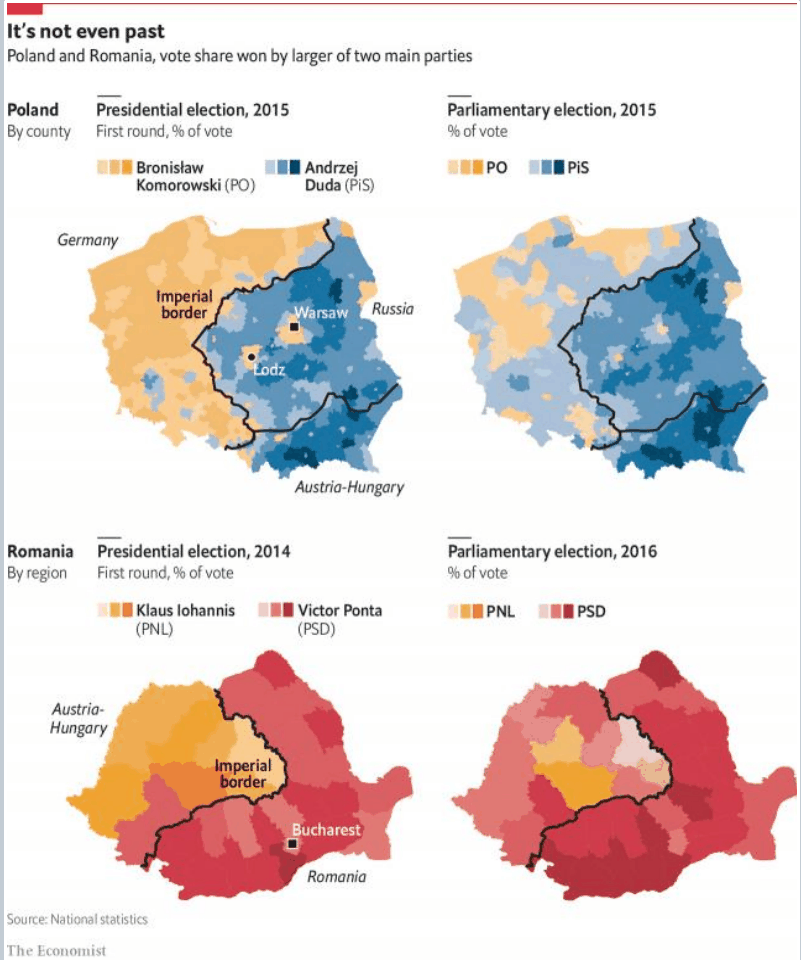
Még meglepőbb az alabamai példa. A 2016-os amerikai elnökválasztáson a demokrata (kék) megyék egy sávban húzódnak – pontosan ott, ahol kb. 100 millió évvel ezelőtt, a krétakorban a tenger partja volt.
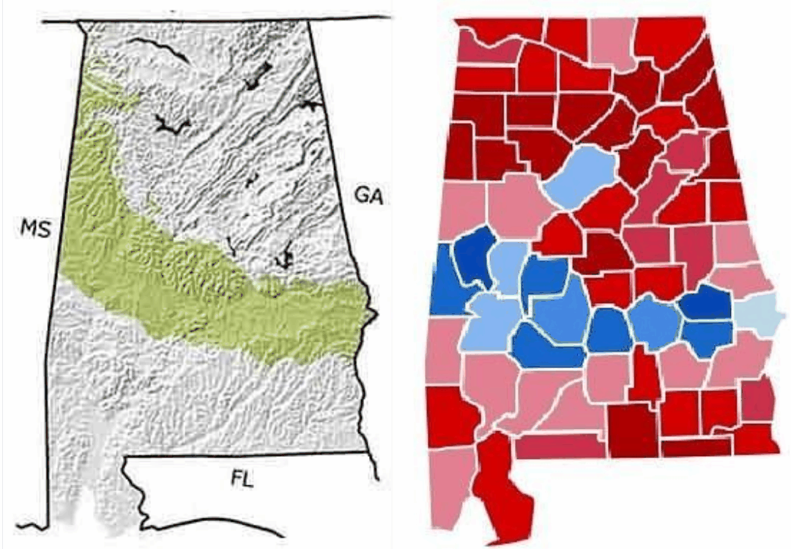
A magyarázat a gazdaságtörténetben van. Az egykori tengerfenék üledékéből különösen termékeny, sötét talaj lett (ezt hívják „Black Beltnek”). A 19. században itt jöttek létre a gyapotültetvények, ahol rabszolgák dolgoztak. Az ő leszármazottaik ma is nagyobb arányban élnek itt, és többségük a demokratákra szavaz. A földrajz tehát nem közvetlenül hat a szavazásra, hanem egy gazdaságtörténeti láncon keresztül.
Az ilyen tartós hatásokra a szakirodalom az útfüggőség (path dependence) kifejezést használja: a korábbi döntések és intézmények kijelölik, merre mehet tovább egy társadalom.
A két térkép tanulsága ugyanaz: a mai különbségek mögött gyakran évszázados gazdaságtörténeti okok állnak. Aki érteni akarja a jelent, annak a múltat is ismernie kell.
✏️ Gondold végig – Bevezetés
- Miért nem elég egy közösségnek az ösztönös vagy „szokásból” hozott döntésekre hagyatkoznia, amikor a jólétéről dönt?
Mintaválasz
Mert az ösztön és a szokás csak a már ismert helyzetekben működik jól. Új problémánál a tudatosan megtanult tudás segít: az elméletek megmondják, mi miből következik, a múltbeli példák pedig megmutatják, mi vált be és mi nem. A gazdaságtörténet ezt a harmadik döntési módot erősíti.
- Mit mutat a születéskor várható élettartam alakulása 1770 és 2019 között?
Mintaválasz
Hogy az életszínvonal hosszú ideig szinte nem változott (34–36 év), majd a 19. század végétől tartósan és gyorsan javult (2019-re 79 év). A fejlődés tehát nem egyenletes: egy fordulópont után gyorsult fel – ezt a fordulópontot nevezzük majd ipari forradalomnak.
- Hogyan lehet, hogy egy száz éve eltűnt birodalmi határ ma is látszik a választási térképen?
Mintaválasz
A birodalmak eltérő intézményeket, gazdasági szerkezetet, infrastruktúrát és szokásokat hagytak hátra. Ezek a határ eltűnése után is fennmaradtak, és generációkon át alakították az emberek életét és értékrendjét – így a szavazásukat is.
- Miért nem igaz, hogy Alabamában a krétakori partvonal „befolyásolja” a választókat?
Mintaválasz
Mert a hatás közvetett: a régi tengerfenék termékeny talaja gyapotültetvényekhez vezetett, az ültetvényeken rabszolgák dolgoztak, és leszármazottaik ma is ott élnek nagyobb arányban. A földrajz a gazdaságtörténeten keresztül hat.
Növekedés, fejlődés, fejlettség 7–10. dia
Kezdjük egy közeli kérdéssel: mikor mondhatjuk, hogy a Miskolci Egyetem fejlődik? És mikor, hogy fejlett, netán elsőrangú? Ha nő a hallgatók száma, az fejlődés? És ha több pénzt kap? Hamar kiderül, hogy a kérdésre csak akkor tudunk válaszolni, ha különválasztunk három fogalmat.
Növekedés: viszonylag könnyen számszerűsíthető változás egy egység (pl. egy ország vagy egy vállalat) kibocsátási lehetőségeiben. A közgazdasági modellek a termelési lehetőségek görbéjének kitolódásaként értelmezik. Két oka lehet: (1) több erőforrás vagy (2) hatékonyabb technológia.
Fejlődés: nehezebben mérhető változás az emberek életkörülményeiben, életszínvonalában. A fejlődésnek köszönhetően új igényeket tudunk kielégíteni, vagy a meglévőket magasabb szinten. Ahhoz, hogy megítéljük, ismernünk kell (1) az emberek céljait, igényeit, szükségleteit, és (2) az erőforrásokat, amelyekkel ezeket kielégíthetik.
Fejlettség: az igények, szükségletek kielégítésének viszonylag magas szintje. Relatív fogalom, összehasonlítással állapítjuk meg: Magyarország Ugandához vagy az 500 évvel ezelőtti Magyar Királysághoz képest fejlett, a mai Norvégiához képest nem. Mivel az összehasonlítás mérőszámokkal történik, a fejlettség mérése elengedhetetlen – bár szinte megoldhatatlanul nehéz.
Az egyetem példáján: ha több hallgató több diplomát szerez, az növekedés. Ha a diplomások jobb állást kapnak, és a tudásukkal jobban tudják alakítani az életüket, az fejlődés. Hogy az egyetem fejlett-e, az csak más egyetemekhez mérve dől el.
A növekedés nem azonos a fejlődéssel. Nőhet egy ország GDP-je úgy, hogy az emberek többségének élete alig javul – például ha a többletet szűk csoport viszi el, vagy ha a növekedés ára a romló egészség és környezet. A ZH egyik visszatérő kérdése épp ez: miért nem azonos a fejlődés az egy főre jutó kibocsátás növekedésével?
A fejlődés mint szabadság
A fejlődés legismertebb tágabb értelmezése az indiai közgazdász, Amartya Sen nevéhez fűződik.
Amartya Sen: A fejlődés mint szabadság (1999). A fejlődés révén tudják az emberek biztosítani azt a jogukat, hogy saját döntéseikkel alakítsák az életüket. A fejlődés tehát a választás szabadságát és lehetőségét adja meg. Ehhez három dolog kell:
- erőforrások, energia – ezt termeli meg a növekedés;
- képességek, lehetőségek – egészség, iskolázottság, lényeglátás, kritikus szemlélet;
- jogok – pl. szólásszabadság, demokratikus jogok.
A képességekhez egy újabb gondolat kapcsolódik: Chachra (2023) szerint az infrastruktúra az, ami képességekkel ruház fel minket. Az út, a villamoshálózat vagy az internet nélkül a tehetség sem tud érvényesülni. Az infrastruktúrának van egy technológiai és egy intézményi része – mindkettőről részletesen lesz szó a kurzusban.
Sen gondolatai a gyakorlatban is hatottak: részt vett az ENSZ emberi fejlődési indexének (HDI) kidolgozásában, amely a jövedelem mellett a várható élettartamot és az iskolázottságot is figyelembe veszi. Ez a fejlődés mérésének egyik kísérlete – ami átvezet a következő gondolathoz.
A három probléma
A fejlettséghez három problémát kell megoldani:
- Növekedés: minél jobban csökkentsük a szűkösséget, vagyis bővítsük az erőforrásainkkal elérhető eszközöket.
- Elosztás: határozzuk meg, melyek a legfontosabb célok, igények egy közösségben, és kötelezzük el magunkat olyan elvek mellett, amelyekkel a meglévő erőforrásokból a legjobban kielégíthetjük őket.
- Mérés: fejlesszünk ki olyan mérési módszereket és elméleteket, amelyekkel eldönthető, hogy közelítünk-e a növekedési és elosztási céljainkhoz.
A három probléma összefügg: elosztani csak azt lehet, amit megtermeltünk; hogy jól osztottunk-e el, azt mérni kell; a mérés pedig azon múlik, mit tartunk fontos célnak. Ez a hármas végigkíséri a kurzust.
✏️ Gondold végig – Növekedés, fejlődés, fejlettség
- Egy ország GDP-je tíz év alatt a duplájára nő, de a várható élettartam és az iskolázottság nem változik.
Növekedett vagy fejlődött az ország?
Mintaválasz
Növekedett: bővült a kibocsátása. A fejlődésről ez még nem mond semmit: ha az emberek egészsége, tudása, választási lehetősége nem javult, akkor Sen értelmében nem fejlődött. Valószínűleg az elosztással van gond – a többlet nem jutott el a lakosság nagy részéhez.
- Miért mondjuk, hogy a fejlettség relatív?
Mintaválasz
Mert csak összehasonlításból derül ki: ugyanaz az ország egy szegényebbhez vagy a saját múltjához képest fejlett, egy gazdagabbhoz képest nem. Ezért kell mérni – a mérés viszont nehéz, mert az igények sokfélék.
- Milyen három feltétel kell Sen szerint ahhoz, hogy valaki szabadon alakíthassa az életét? Hozz mindegyikre példát!
Mintaválasz
Erőforrás (jövedelem, energia – pl. tud-e tankönyvet venni), képesség (egészség, iskolázottság – pl. tud-e olvasni), jog (pl. választhat-e szabadon, szólhat-e szabadon). Bármelyik hiánya korlátozza a választás szabadságát.
- Melyik problémához tartozik az a vita, hogy az adóbevételt oktatásra vagy nyugdíjra költse-e az állam?
Mintaválasz
Az elosztás problémájához: arról szól, mi a közösség legfontosabb célja, és milyen elvek szerint fordítja rá a szűkös erőforrásait.
„A történelem rímel” – miért hasznos a gazdaságtörténet? 11–14. dia
„A történelem nem ismétli önmagát, de azért rímel” – szól a Mark Twainnek tulajdonított mondás. Ugyanaz a helyzet sosem tér vissza, de hasonló problémák, hasonló minták újra és újra felbukkannak.
Kollektív tanulás: a közösség problémákkal szembesül, megoldásokat talál rájuk, és ezek a megoldások beépülnek a közös tudásba. Így nem kell minden nemzedéknek elölről kezdenie.
Hogy ez mekkora tudáskincs, azt két kérdés mutatja meg: hány ember él ma a Földön, és hány ember élt valaha?
Ma nagyjából 8 milliárd ember él. A demográfusok becslése szerint az emberiség története során összesen kb. 100–120 milliárd ember élt. Minden ma élőre több mint tíz elődje jut, akik mind szembesültek a maguk problémáival – és sokan meg is oldották őket.
A történelem tehát a régen élt emberek gondolatainak megértése: hogyan vélekedtek a problémáikról, és mit gondoltak a megoldásukról.
A gazdaságtörténet tanulmányozása ezért négy okból hasznos:
- bölcsebbek leszünk;
- megértjük, hogy bizonyos szokások és szabályok miért alakultak ki, és hogyan segítik a három probléma (növekedés, elosztás, mérés) megoldását;
- ráérzünk, milyen szokások, szabályok megváltoztatásával találhatunk még hatékonyabb megoldásokat;
- megtanuljuk, hogy bizonyos kísérletek – bármennyire vonzók is – miért nem adnak jó megoldást.
Ki volt a legfejlettebb?
Tegyünk egy próbát! Melyik térség volt a legfejlettebb 2000 évvel ezelőtt: Gallia, Hellász, a Közel-Kelet, Perzsia vagy Róma?
A legtöbben Rómát mondják, és jó okkal: a Római Birodalom városai, útjai, jogrendszere és kereskedelme kiemelkedett a korban. De a Közel-Kelet és Hellász városai is régóta a civilizáció központjai voltak. Gallia – a mai Franciaország – ekkor még a peremvidékhez tartozott. Ma a helyzet nagyjából fordított: Franciaország a világ leggazdagabb országai közé tartozik, a Közel-Kelet nagy része nem.
A tanulság: a fejlettség nem állandó. A centrumok áthelyeződnek, és aki egyszer elöl járt, nem biztos, hogy ott is marad. Ezért érdemes azt keresni, mi okozza a változást.
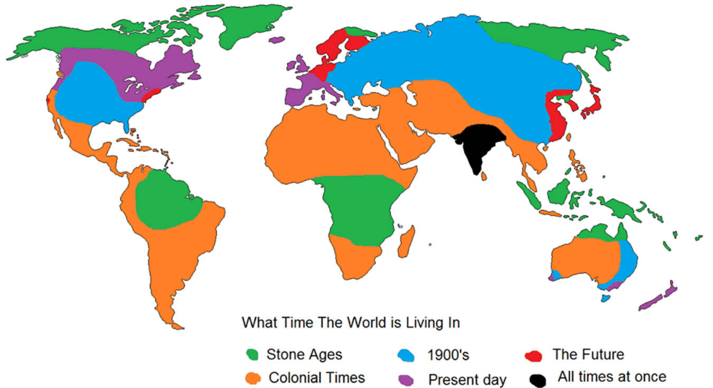
✏️ Gondold végig – Miért hasznos a gazdaságtörténet?
- Mit jelent, hogy a történelem „nem ismétli önmagát, de rímel”?
Mintaválasz
Hogy pontosan ugyanaz a helyzet nem tér vissza, de hasonló problémák (pl. válságok, felzárkózási kísérletek) újra előfordulnak. Ezért a múlt nem kész receptet ad, hanem mintákat, amelyekből tanulhatunk.
- Hogyan kapcsolódik a kollektív tanulás a fejlődéshez?
Mintaválasz
A kollektív tanulás révén a megoldások felhalmozódnak a közös tudásban, így minden nemzedék a korábbiak eredményeire építhet. Ez a tudásfelhalmozás a fejlődés egyik motorja (ld. 5. fejezet: tudás és technológia).
- Mondj egy példát arra, amikor egy vonzó gazdaságpolitikai kísérlet nem adott jó megoldást!
Mintaválasz
Például a tervgazdaság: a központi tervezés vonzónak tűnt, mert gyors iparosítást ígért, de hosszú távon nem tudta hatékonyan elosztani az erőforrásokat, és nem ösztönzött innovációra (ld. 13. fejezet). A gazdaságtörténet épp az ilyen tanulságokat gyűjti össze.
- Mit tanít, hogy 2000 éve Gallia még perem volt, ma Franciaország gazdag?
Mintaválasz
Hogy a fejlettség relatív és változó: a centrumok áthelyeződnek. A fejlettség tehát nem a földrajz vagy a „nép” adottsága, hanem olyan tényezőké, amelyek idővel változhatnak – ezeket keressük a kurzusban.
A fejlődés receptje: egy út vagy sok? 15–19. dia
„– Lenne szíves megmondani, merre kell mennem?
– Az attól függ, hová akarsz jutni – felelte a Fakutya.
– Ó, az egészen mindegy – mondta Alice.
– Akkor az is egészen mindegy, hogy merre mégy – mondta a Fakutya.”Lewis Carroll: Alice Csodaországban, 6. fejezet (Kosztolányi Dezső fordítása)
A fejlődés receptjéről csak akkor beszélhetünk, ha tudjuk, hová akarunk eljutni. A legkézenfekvőbb válasz: oda, ahol a legfejlettebb országok tartanak. De vajon ugyanazon az úton kell-e végigmenni, amelyen ők jártak?
Unilineáris fejlődés: egy út
Unilineáris fejlődés: minden társadalom ugyanazokon a szakaszokon halad végig, csak más-más időben. A legismertebb változat Rostow szakaszelmélete:
- tradicionális társadalom;
- a nekilendülés előfeltételeinek megteremtése;
- nekilendülés (take-off);
- út az érettség felé (további ipari forradalmak);
- a magas szintű tömegfogyasztás kora.
Hasonló logikát követ a társadalomtípusok sora is: rurális → indusztriális → posztindusztriális → globális társadalom. Az elmélet vitatott: ha igaz, a lemaradóknak csak le kell másolniuk az élenjárók útját.
Az unilineáris elméletben van igazság. Nézd meg, hogyan alakult a mezőgazdaságban dolgozók aránya! Lengyelország, Franciaország, Olaszország, Nagy-Britannia, Hollandia és Kína más-más időben indult, de a görbe mindenhol ugyanazt a pályát járja be: a munkaerő kiáramlik a mezőgazdaságból az iparba és a szolgáltatásokba.
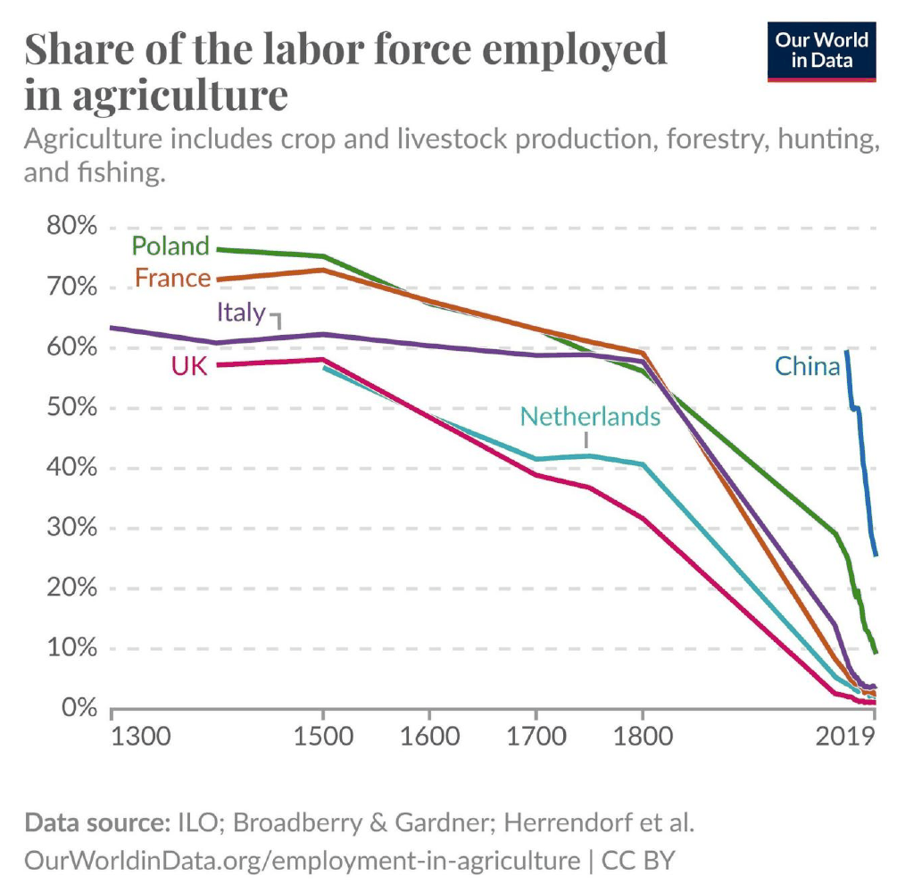
Második, harmadik út
Az ellenvetés az, hogy a későn indulók már nem ugyanabban a világban próbálnak felzárkózni, mint az elsők. Időközben kialakultak a nemzetközi gazdaság szabályai – és ezeket nem a lemaradók írták.
Világrend (nemzetközi gazdasági rezsim): implicit és explicit elvek, normák, szabályok és döntéshozatali eljárások összessége, amelyek körül a szereplők elvárásai a nemzetközi kapcsolatok egy adott területén összefutnak (Krasner, 1982).
Hegemónia a világrendben (Keohane, 1984):
- A rezsimek a világgazdaság szükséges elemei: csökkentik a bizonytalanságot és a tranzakciós költségeket, és megelőzik a piaci kudarcokat.
- De önző, a saját érdekeiket védő államok hozzák létre őket, a nemzeti érdek mentén.
- A szabályokat leginkább a hegemón hatalom alakítja, és akkor működnek, ha az érdekek egységesek.
Ebből az következik, hogy nem érdemes mechanikusan a legfejlettebb útját követni: a hegemón úgy alakítja a szabályokat, hogy mások ne tudják utolérni. Új utat kell választani – erre Kína a példa.
A kérdés Magyarország számára is izgalmas: mennyire lehet minta számunkra a Nyugat útja? Erre a kurzus végén, a 11–12. fejezet nemzetközi rendjének ismeretében érdemes visszatérni.
Zárójelben: cél-e egyáltalán a növekedés?
Eddig természetesnek vettük, hogy a növekedés és a fejlődés jó dolog. Ezt azonban régóta sokan megkérdőjelezik:
- Veblen: A dologtalan osztály elmélete (1899) – a gazdagok fogyasztásának jó része nem szükségletet elégít ki, hanem a társadalmi rangot mutatja.
- Meadows és társai: A növekedés határai (1972) – a véges bolygón a népesség és a termelés nem nőhet korlátlanul.
- A Brundtland Bizottság jelentése (1987) – bevezette a fenntartható fejlődés fogalmát.
A felmerült alternatívák:
- a három pillér modellje (ENSZ, 2005): környezet, gazdaság és társadalom egyensúlya;
- új üzleti modellek: újrahasznosítás, életciklus-szemlélet, körforgásos (cirkuláris) gazdaság, etikus működés;
- fenntartható életvitel (sustainable living).
Diamond (vitatott) szabálya: azok a kultúrák, amelyek teljesen elpusztították a természeti környezetüket, eltűntek – például a maja birodalom.
Veblen nevéhez a hivalkodó fogyasztás (conspicuous consumption) fogalma fűződik. A Brundtland-jelentés meghatározása szerint az a fejlődés fenntartható, amely a jelen szükségleteit úgy elégíti ki, hogy nem veszélyezteti a jövő nemzedékek esélyét a saját szükségleteik kielégítésére.
✏️ Gondold végig – Egy út vagy sok?
- Mit állít az unilineáris fejlődéselmélet, és mi szól mellette?
Mintaválasz
Hogy minden társadalom ugyanazokon a szakaszokon megy át (Rostow: tradicionális társadalomtól a tömegfogyasztásig). Mellette szól, hogy bizonyos szerkezeti változások valóban mindenhol lezajlanak: például a mezőgazdasági foglalkoztatás aránya minden fejlődő országban hasonló pályán csökken.
- Miért nem tudja egy felzárkózó ország egyszerűen lemásolni a legfejlettebb ország útját Keohane szerint?
Mintaválasz
Mert a nemzetközi rezsimek szabályait önző államok, főleg a hegemón alakítja a saját érdekei szerint. A követő ezért más feltételek között indul, mint annak idején a vezető – új utat kell keresnie (pl. Kína).
- Egy ország gyors iparosítással kétszeresére növeli a GDP-jét, de kivágja az erdőit, és elszennyezi a folyóit.
Hogyan értékelnéd ezt a fenntartható fejlődés szempontjából?
Mintaválasz
A növekedés megvalósult, de a három pillér közül a környezeti sérült, és ez hosszú távon a társadalmi és gazdasági pillért is veszélyezteti. A Brundtland-féle mérce szerint ez nem fenntartható, mert a jövő nemzedékek lehetőségeit szűkíti; Diamond vitatott szabálya szerint szélsőséges esetben akár a közösség fennmaradását is.
Növekedés és környezet 20–26. dia
Az előző szakasz kérdése – cél-e a növekedés – nem elvont vita. Az ipari forradalom óta a növekedést nagyrészt fosszilis energia hajtja, és ennek látható következményei vannak. Nézzük meg a számokat!
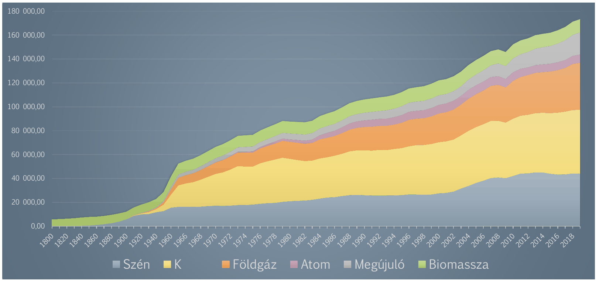
A fosszilis tüzelőanyagok elégetése szén-dioxidot juttat a légkörbe. A légköri CO₂-koncentráció ezer éven át szinte változatlan volt (kb. 280 ppm), aztán az ipari forradalommal meredeken emelkedni kezdett, és ma 400 ppm fölött jár.
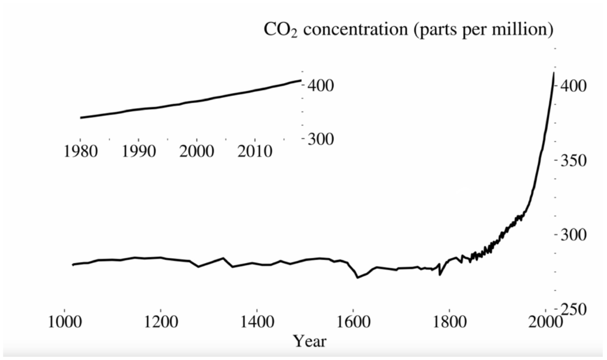
A CO₂-koncentráció és a globális átlaghőmérséklet együtt mozog: ahogy a 20. század második felében felgyorsult a CO₂ emelkedése, úgy emelkedett a hőmérséklet is: ma több mint 1 °C-kal magasabb, mint a 19. század végén.
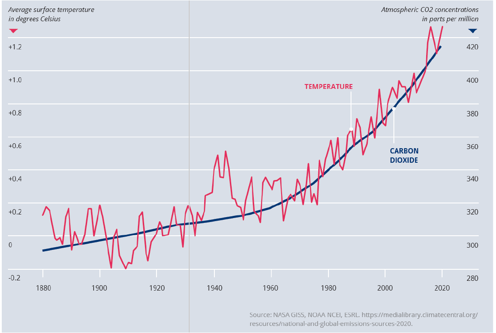
Érdemes geológiai léptékben is ránézni. A 23. dia az elmúlt 100 millió év légköri CO₂-szintjét és hőmérsékletét veti össze. A Föld története során a CO₂-szint volt már sokkal magasabb is – akkor a bolygó is sokkal melegebb volt. A két görbe a mély múltban is együtt mozgott.
A mostani változás különlegessége a sebessége: ami a földtörténetben jellemzően százezer vagy millió évek alatt zajlott le, az most kb. 150 év alatt történt. Az emberi civilizáció egy stabil éghajlatú időszakban (a holocénben) alakult ki, ezért a gyors változáshoz nehéz alkalmazkodni.
Kik bocsátották ki ezt a sok szén-dioxidot? Ha az 1850 és 2021 közötti teljes, halmozott kibocsátást nézzük, az Egyesült Államok vezet, Kína a második, utána Oroszország következik. Brazíliában és Indonéziában a kibocsátás nagy része nem fosszilis, hanem erdőirtásból és földhasználatból származik.
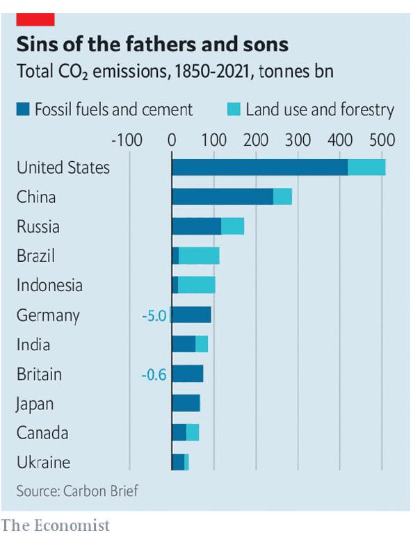
Ennek a nemzetközi vitákban is súlya van: a korán iparosodott országok a történelmi felelősség miatt nagyobb terhet vállaljanak? Erről szól például a 2022-es klímacsúcson (COP27) létrehozott „veszteség és kár” alap.
Az éves kibocsátás dinamikája is sokat elárul. A 19. században szinte csak Európa és az Egyesült Államok bocsátott ki jelentős mennyiséget. A 20. század második felétől a kibocsátás gyorsan nő, és a növekmény egyre nagyobb része Ázsiából, mindenekelőtt Kínából érkezik – vagyis onnan, ahol most zajlik az iparosodás.
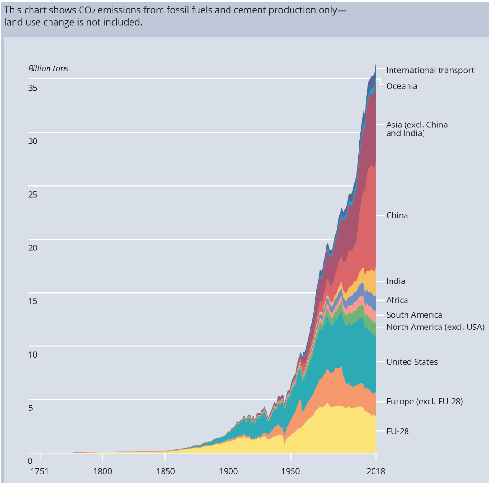
A Jevons-paradoxon
Kézenfekvő megoldásnak tűnik a hatékonyság: ha kevesebb energiából állítjuk elő ugyanazt, kevesebb lesz a kibocsátás. A kurzusban is sokat hallunk majd a hatékonyságjavulásról és a gyümölcseiről. Egy 19. századi angol közgazdász azonban már 1865-ben figyelmeztetett, hogy ez nem ilyen egyszerű.
Jevons-paradoxon (1865): ha egy erőforrás felhasználásának hatékonysága javul, az abból az erőforrásból felhasznált mennyiség gyakran nem csökken, hanem nő.
hatékonyabb felhasználás → olcsóbb lesz az erőforrás használata → többen és több célra használják → nő a teljes felhasználás
Jevons a szénről írt: a gőzgépek egyre kevesebb szenet fogyasztottak, de éppen ezért egyre több helyen érte meg gőzgépet használni – így Anglia szénfelhasználása nem csökkent, hanem gyorsan nőtt.
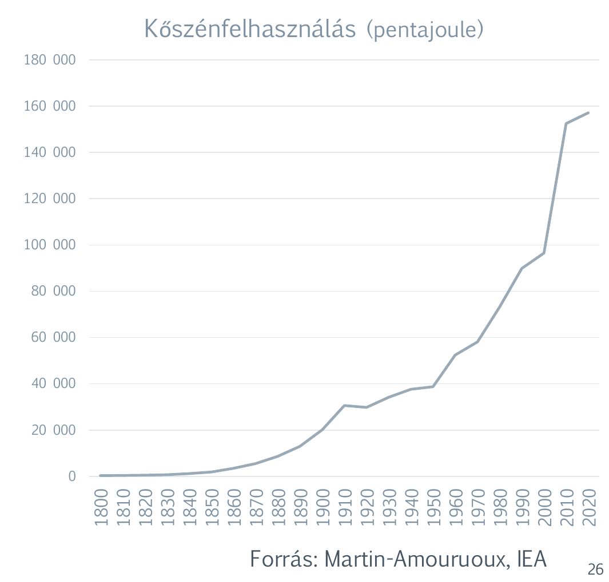
Ne mondd, hogy a hatékonyságjavulás automatikusan csökkenti az erőforrás-felhasználást! A Jevons-paradoxon szerint gyakran épp az ellenkezője történik. A hatékonyság önmagában nem garantál fenntarthatóságot.
✏️ Gondold végig – Növekedés és környezet
- Miért kapcsolódik össze az ipari forradalom és a légköri CO₂-koncentráció emelkedése?
Mintaválasz
Az ipari forradalom óta a növekedést nagyrészt fosszilis energia (szén, majd kőolaj és földgáz) hajtja. Ezek elégetése CO₂-t juttat a légkörbe, ezért a koncentráció ezer év stagnálás után épp az ipari forradalom idején kezdett emelkedni.
- Miért vitatják a nemzetközi tárgyalásokon, hogy ki mennyit csökkentse a kibocsátását?
Mintaválasz
Mert a halmozott (történelmi) kibocsátás nagy része a korán iparosodott országoktól (USA, Európa) származik, a mai növekmény viszont főleg a most iparosodó Ázsiából. Mindkét fél a másikra hivatkozhat: a felzárkózók a történelmi felelősségre, a fejlettek a jelenlegi kibocsátásra.
- Egy város energiatakarékos LED-izzókra cseréli a közvilágítást, és az áramfogyasztás néhány év múlva mégis nő.
Hogyan lehetséges ez?
Mintaválasz
Ez a Jevons-paradoxon: a világítás olcsóbb lett, ezért több helyen, hosszabb ideig és több célra (díszkivilágítás, reklámfelületek) használják. A teljes felhasználás nőhet, pedig a hatékonyság javult.
A nyugati út és az ipari forradalmak 27–32. dia
A modern gazdasági növekedés a Nyugaton kezdődött, ezért a fejlődés receptjét keresve sokan a nyugati kapitalizmust tekintik célnak. De mit jelent pontosan a „Nyugat”, és mit a „kapitalizmus”?
Civilizáció: közös gazdasági és egyéb életkörülményeket jelző kulturális egység. Fernand Braudel szerint „voltaképpen a civilizáció a létező leghosszabb történet”. A Nyugat a Földön eddig létezett nagyjából tucatnyi civilizáció egyike.
Kapitalizmus – Werner Sombart alapvető jellemzői:
- a termelés célja a profit, nem a saját szükségletek kielégítése (a szükségletkielégítés elvét felváltja a profitelv);
- szabad kezdeményezés;
- kockázatot viselő vállalkozó;
- jövedelmezőség és értéktörvény: a szabad piaci versenyben a sikeresek kerekednek felül.
Miért a Nyugat? Versengő magyarázatok
Arra, hogy miért éppen a Nyugat jutott el elsőként a tartós növekedésig, nincs egyetlen elfogadott válasz. A diasor hat, egymással versengő (és egymást kiegészítő) mechanizmust sorol fel. A kurzus további fejezetei sorra kibontják ezeket:
- Verseny és kereskedelem: a nemzetállamok és a politikai-gazdasági élet decentralizált, ez segít a jó intézményi megoldások kifejlesztésében. → 8. fejezet
- A tulajdon védelme: népképviselet, törvénykezés, a gazdasági viták békés rendezése. → 4. fejezet
- A tudomány viszonylagos szabadsága: a környezet megismerésének és megváltoztatásának módszerei egyre kifinomultabbak, javul a technológia. → 5. fejezet
- Javuló életkörülmények: egészségügy, élelmezés, növekvő népesség és piacméret. → 3. fejezet
- Fogyasztás: kiépül a fogyasztói társadalom, új piacok jönnek létre, az emberek olyasmire is költenek, amire korábban nem. → 9. fejezet
- Munkamorál: szorgalom és takarékosság. → 10. fejezet
A természeti erőforrások bősége nincs a felsorolt magyarázatok között – és ez nem véletlen, ahogy rögtön látni fogjuk. A ZH szívesen kérdez rá, melyik tényező nem szerepel a listán.
Hosszú távú fejlődés: több erőforrás vagy jobb felhasználás?
A növekedés definíciójánál láttuk, hogy a kibocsátás kétféleképpen bővülhet:
- több erőforrás bevonásával, vagy
- a meglévő erőforrások hatékonyabb felhasználásával.
A fő nyugati tapasztalat: az erőforrásokkal bőségesen ellátott gazdaságok nem feltétlenül gazdagok, de az erőforrásaikat hatékonyan használó gazdaságok szinte mindig azok – függetlenül az erőforrás-ellátottságtól.
Honnan jön a hatékonyság? Két forrásból:
- Technológia: tudományos, mérnöki és üzleti ismeretek arról, hogyan lehet az erőforrásokat javakká (termékké, szolgáltatássá) alakítani.
- Intézmények: szabályok és normák, amelyek meghatározzák a gazdasági szereplők döntéseinek kereteit – mit szabad, mihez van jogunk, mi tilos, mi illik.
Jó példa erre Japán vagy Svájc: kevés nyersanyaggal rendelkeznek, mégis a leggazdagabb országok közé tartoznak. A másik oldalon több nyersanyagban gazdag ország szegény maradt – erről szól a következő szakasz erőforrás-átka.
Az ipari forradalom
Ipari forradalom: gazdasági, társadalmi, urbanizációs és demográfiai folyamatok összessége, amelyek eredményeként hosszú távon, tartósan és érzékelhetően bővül a gazdaság teljesítménye, és javulnak az életkörülmények.
Az ipari forradalom tehát nem egyetlen találmány, hanem összetett folyamat, amely a technológiát és az intézményeket egyformán átalakítja. Eric Hobsbawm (1962) ezért kettős forradalomnak nevezte: technológiai-gazdasági és társadalmi forradalom egyszerre. Két képpel szokás leírni:
- az esőcsinálók alkonya: a természeti környezet helyét a mesterséges veszi át – a termelés már nem az időjárás kegyén múlik;
- a mesteremberek alkonya: hatalmas gyárak, sok munkás, erős szakosodás váltja fel a kézműves műhelyeket.
Hobsbawm A forradalmak kora (1962) című könyvében a „kettős forradalom” eredetileg a brit ipari forradalom és a francia politikai forradalom együttesét jelentette. A diasor – és a ZH – tágabb értelemben használja: technológiai-gazdasági és társadalmi átalakulás egyszerre. A vizsgán ezt a jelentést használd.
Hogy mekkora fordulatot hozott az ipari forradalom, azt Ian Morris társadalmi fejlettségi indexe mutatja a legszemléletesebben. Tizenhatezer éven át alig mozdul – aztán az utolsó két évszázadban szinte függőlegesen ugrik fel.
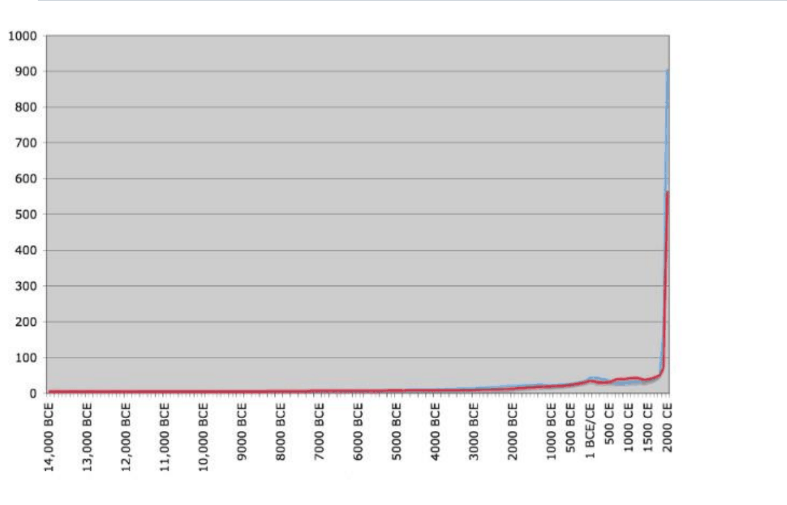
Morris indexe négy összetevőből áll: energiafelhasználás fejenként, urbanizáció (a legnagyobb város mérete), hadviselési képesség és információtechnológia. A görbe alakját „hokiütő-görbének” is szokás nevezni.
Négy ipari forradalom
Az ipari forradalom nem egyszeri esemény volt: azóta több hullámban újra és újra átalakult a termelés.
| Forradalom | Hol és mikor? | Mi jellemezte? |
|---|---|---|
| Első | Anglia 1780–1830; Franciaország, Belgium, Poroszország az 1800-as évektől; Hollandia, Svájc, Skandinávia az 1840-es évektől; Magyarország 1870–80-tól | A textiliparból indul; gőztechnológia és gépesítés. A világ első gépesített gyára: John Lombe selyemgyára, Derby, 1717. |
| Második | USA és Németország az 1860–70-es évektől, majd Japán | Tömegtermelés, elektromosságra épülő gépesítés, erős vegy- és nehézipar; a hatalmas társaságok (monopóliumok) kora. |
| Harmadik | USA, Nyugat-Európa és Japán az 1970-es évektől | Automatizálás az elektronika és a számítógépek elterjedésével. |
| Negyedik | Napjainkban | Globális hálózatok és mesterségesintelligencia-megoldások. |
Figyeld meg, hogy minden hullámnak más a „vezető” országa: Angliát a második forradalomban az USA és Németország előzi meg. A fejlettség centruma tehát a modern korban is vándorol – ahogy 2000 évvel ezelőtt óta is.
✏️ Gondold végig – A nyugati út és az ipari forradalmak
- Miért nem elegendő a természeti erőforrások bősége a gazdagsághoz?
Mintaválasz
Mert a tartós gazdagság a hatékonyságon múlik: azon, hogy mennyi jószágot tudunk előállítani az erőforrásainkból. A hatékonyság két forrása a technológia és az intézmények. Az erőforrásokat hatékonyan használó gazdaságok szinte mindig gazdagok, az erőforrásokban gazdagok nem feltétlenül.
- Miért nevezte Hobsbawm az ipari forradalmat „kettős forradalomnak”?
Mintaválasz
Mert a technológiai-gazdasági változás (gépek, gyárak, gőz) társadalmi átalakulással járt együtt: urbanizáció, új társadalmi rétegek, új intézmények. A kettő egymást erősítette.
- Mi a különbség az első és a második ipari forradalom között?
Mintaválasz
Az első Angliában indult a 18. század végén, a textiliparból, gőzgéppel és gépesítéssel. A második az 1860–70-es évektől az USA-ban és Németországban bontakozott ki: tömegtermelés, elektromosság, vegyipar és nehézipar, hatalmas monopolvállalatok.
- Válassz ki egyet a hat versengő magyarázat közül, és fogalmazd meg az oksági láncát!
Mintaválasz
Például a tulajdon védelme: ha a törvények és a népképviselet védik a tulajdont, a vállalkozó nem kell féljen, hogy elveszik a hasznát → megéri befektetnie és újítania → nő a tőkeállomány és javul a technológia → tartós növekedés. (Ezt a 4. fejezet bontja ki.)
Erőforrások és a növekedés alapmodellje 33–35. dia
A „hatékonyság fontosabb az erőforrásnál” állítást a közgazdaságtan is alátámasztja.
A növekedés alapmodellje (Solow): az egy főre eső jövedelem a tőkefelhalmozás (fizikai, természeti és emberi tőke) és a hatékonyság változásának függvénye. A kettő közül a hatékonyság a meghatározó.
Miért a hatékonyság? Mert a tőkefelhalmozás hozadéka csökken: az első traktor óriási segítség egy gazdaságban, a tizedik már alig növeli a termést. A tőke növelése ezért egy ponton túl nem visz tovább. A technológia javulása viszont minden tőkeegységet termelékenyebbé tesz, így tartósan emelheti a jövedelmet.
Az erőforrás-átok
Ha a hatékonyság a döntő, akkor a nyersanyagbőség legfeljebb nem segít – mondhatnánk. A tapasztalat szerint azonban akár árthat is.
Erőforrás-átok és holland kór: az a jelenség, hogy egyes erőforrásokban gazdag országok mégis alacsony életszínvonalat biztosítanak lakóiknak. Az okai:
- kiszorító hatás – a nyersanyagszektor elszívja a tőkét és a munkaerőt a többi ágazattól;
- dezindusztrializáció – leépül a feldolgozóipar;
- árfolyamtorzítás – a nyersanyagexport felértékeli a valutát, a többi exportágazat versenyképtelenné válik;
- járadékvadászat – a könnyen megszerezhető nyersanyagbevételért politikai harc folyik;
- politikai instabilitás.
nyersanyagexport → erős valuta → a feldolgozóipar versenyképtelen → dezindusztrializáció
nyersanyagjáradék → harc a járadékért → korrupció, instabilitás → rossz intézmények
A „holland kór” nevet a The Economist adta 1977-ben: Hollandiában a groningeni földgázmező felfedezése (1959) után felértékelődött a gulden, és visszaesett a feldolgozóipar. Gyakran említett példák az erőforrás-átokra: Nigéria, Venezuela vagy a Kongói Demokratikus Köztársaság. Ellenpéldaként Norvégia szolgál, amely jó intézményekkel és állami befektetési alappal elkerülte a csapdát.
Az erőforrás-átok nem azt jelenti, hogy a nyersanyag eladhatatlan, vagy hogy „túl gyors iparosodást” okoz. Épp ellenkezőleg: kiszorítja az ipart, és rontja az intézményeket. Itt kapcsolódik a fejezet a 4. fejezethez (kizsákmányoló intézmények, járadékvadászat).
Mi kellett az első ipari forradalomhoz?
Hogy miért éppen Angliában kezdődött az első ipari forradalom, arról ma is vita folyik. A diasor három újabb kutatást emel ki – mindhárom más tényezőt tart döntőnek:
- Sok tőke, amely a rabszolgakereskedelemből származott (Heblich, Redding és Voth, 2023).
- Vállalkozók és a szabad vállalkozásból származó kezdeményezőerő (Heldring, Robinson és Vollmer, 2021).
- Munkaerőhiány, amely gépesítésre ösztönzött (Voth, Caprettini és Trew, 2022): ahol drága a munkás, ott megéri gépet venni helyette.
A három magyarázat nem zárja ki egymást: a tőke, a vállalkozói szabadság és az ösztönzők együtt is hathattak.
A fejlődés nyugati receptje – három állítás
- A tartós növekedés fő forrása a hatékonyság javulása, nem pusztán több erőforrás bevonása.
- A technológia és az intézmények együtt alakítják a hatékonyságot.
- Nincs mechanikusan másolható recept: a növekedés, az elosztás, a mérés és a fenntarthatóság szempontjai ütközhetnek egymással.
Ez a három állítás a kurzus vezérfonala. A következő fejezetek azt bontják ki, mi javítja a hatékonyságot: a kereskedelem és a szakosodás, a népesség, az intézmények, a tudás, a pénzügyi rendszer, a verseny, a fogyasztás és az értékrend.
✏️ Gondold végig – Erőforrások és a nyugati recept
- Egy ország nagy olajmezőt fedez fel. Tíz év múlva a valutája erős, a gyárai bezárnak, a politikai elit a
bevételek elosztásán veszekszik. Mivel magyaráznád?
Mintaválasz
Erőforrás-átokkal (holland kórral). Az olajexport felértékelte a valutát, ezért a feldolgozóipar versenyképtelenné vált (árfolyamtorzítás, dezindusztrializáció). A könnyen megszerezhető olajbevétel pedig járadékvadászatot és politikai instabilitást szül. Mindez a hatékonyságot rontja, így a nyersanyagbőség ellenére lassul a fejlődés.
- Miért a hatékonyság a meghatározó Solow modelljében?
Mintaválasz
Mert a tőkefelhalmozás hozadéka csökken: egy ponton túl a több tőke alig növeli a kibocsátást. A hatékonyság (technológia) javulása viszont az összes erőforrást termelékenyebbé teszi, így ez adja a tartós növekedést.
- Mit jelent, hogy a fejlődésnek nincs mechanikusan másolható receptje?
Mintaválasz
Hogy nem elég lemásolni egy sikeres ország intézményeit vagy technológiáját. A célok ütközhetnek (a gyors növekedés ronthatja a környezetet vagy az elosztást), a nemzetközi környezet más, mint az élenjárók idején volt, és a technológia meg az intézmények csak együtt működnek.
Összefoglalás
- A növekedés a kibocsátás mérhető bővülése, a fejlődés az életkörülmények javulása, a fejlettség relatív, összehasonlításból adódó szint. Sen szerint a fejlődés a választás szabadsága, amihez erőforrás, képesség és jog kell.
- A fejlettséghez három problémát kell megoldani: növekedés, elosztás, mérés.
- A gazdaságtörténet a kollektív tanulás eszköze: a „történelem rímel”, a múlt hatásai (birodalmi határok, földrajz) ma is látszanak, a fejlettségi centrumok pedig vándorolnak.
- Vitatott, hogy egy út vezet-e a fejlettséghez (Rostow) vagy több (Keohane: a hegemón a saját érdekei szerint alakítja a világrendet). Az is vitatott, hogy cél-e a növekedés – a fenntarthatóság szempontjai (CO₂, klíma, Jevons-paradoxon) ma különösen fontosak.
- A Nyugat sikerére hat versengő magyarázat van: verseny, tulajdonvédelem, tudomány, életkörülmények, fogyasztás, munkamorál.
- Az ipari forradalom kettős (technológiai és társadalmi) forradalom; négy hulláma volt, mindegyiknek más a vezető országa.
- A hatékonyság fontosabb az erőforrásoknál (Solow); a nyersanyagbőség akár árthat is (erőforrás-átok).
Válasz a fejezet kérdésére: a tartós gazdagodás fő forrása a hatékonyság javulása, amelyet a technológia és az intézmények együtt alakítanak – nem az erőforrások bősége. Mechanikusan lemásolható recept azonban nincs: a növekedés, az elosztás, a mérés és a fenntarthatóság céljai ütközhetnek, és minden ország más nemzetközi környezetben próbál felzárkózni.
Esszéhez: ha ezt látod → ezt használd
| Ha az esetben ez áll… | …akkor ezt a fogalmat / mechanizmust használd |
|---|---|
| Nő a GDP, de az emberek élete alig javul | a növekedés nem azonos a fejlődéssel; Sen: a fejlődés mint szabadság; az elosztás problémája (→) |
| Két ország eltérő mutatók szerint „fejlettebb” | a fejlettség relatív; a mérés problémája (→) |
| Egy régi határ, földrajzi adottság ma is látszik a gazdaságban, politikában | „a történelem rímel”; útfüggőség – Kiegészítés (→) |
| Egy ország a fejlettek mintáját másolja, mégsem zárkózik fel | unilineáris fejlődés vs. több út; Keohane: hegemónia a világrendben (→) |
| Gyors növekedés, közben romló környezet, nő a kibocsátás | cél-e a növekedés; fenntartható fejlődés; Jevons-paradoxon (→, →) |
| Ugrásszerű, tartós növekedés, gyárak, városok | ipari forradalom mint kettős forradalom (→) |
| Nyersanyagban gazdag, mégis szegény ország | erőforrás-átok, holland kór; a hatékonyság fontosabb az erőforrásnál (→) |
| Kevés nyersanyag, mégis gazdag ország | a hatékonyság két forrása: technológia és intézmények; Solow (→) |
Kapcsolódások
- Hatékonyság → kereskedelem (2. fejezet): a szakosodás és a nagyobb piac a hatékonyság egyik forrása.
- Intézmények (4. fejezet): a hatékonyság második forrása; az erőforrás-átok járadékvadászata a kizsákmányoló intézményekhez vezet.
- Technológia (5. fejezet): a hatékonyság első forrása; a négy ipari forradalom tudásháttere.
- Világrend, hegemónia (11. és 12. fejezet): a nemzetközi gazdasági rezsimek konkrét története.
- Szintézis (15. fejezet): a „nyugati recept” három állítása a kurzus végén visszatér.
- Népesség mint erőforrás; Malthus és Pepys (3. fejezet): a javuló életkörülmények magyarázatának háttere.
- Verseny és kereskedelem mint a Nyugat sikerének magyarázata (8. fejezet).
- Fogyasztás mint magyarázat (9. fejezet); munkamorál (10. fejezet).
- Növekedés erőforrás-bevonással, hatékonyság nélkül: a szovjet tervgazdaság (13. fejezet).